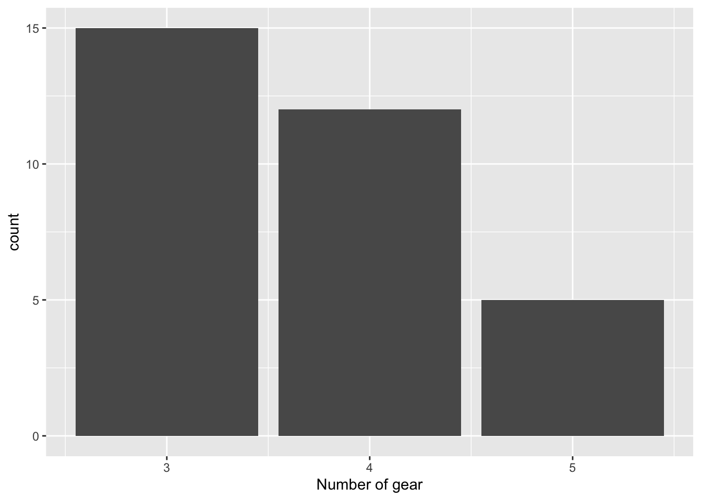
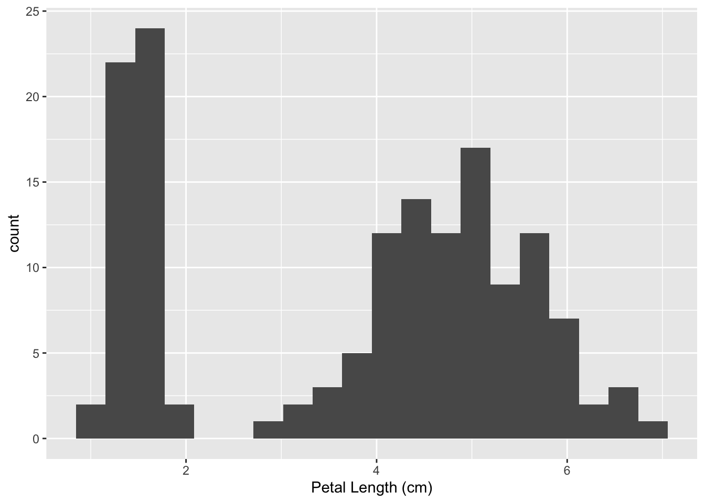
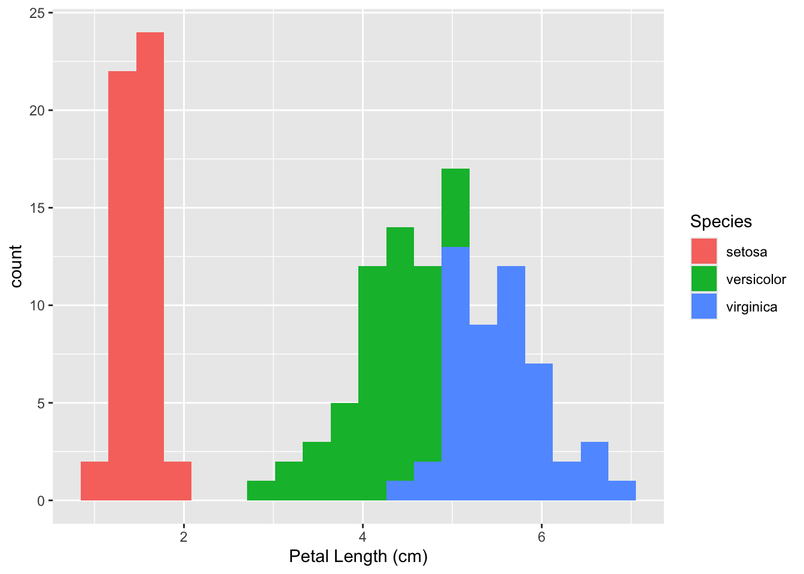
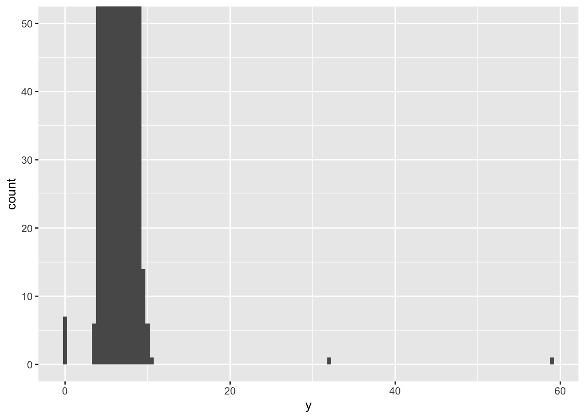

library(ggplot2)
# Number of gears for mtcars data set
ggplot(mtcars, aes(x=gear)) +
geom_bar() +
labs(x = "Number of gear")
Variation is the tendency of the values of a variable to change between each measurement
This variation can happen due to different reasons:
We can see patterns of the variation, this information can be useful. We can understand these patterns visualizing the distribution of the different values taken by the variable.
Remember that we can visualize the distribution of a categorical variable as follows…
library(ggplot2)
# Number of gears for mtcars data set
ggplot(mtcars, aes(x=gear)) +
geom_bar() +
labs(x = "Number of gear")
Each bar of the last plot shows us the number of observations we can found for every value of the variable. We can obtain the number of observations with this simple code…
For visualizing the distribution of continuous variables we can use the histogram…
When analyzing the plots that shows the data variation we need to focus in two things…
Questions like…
We can see it with an example: Petal Length Analysis
ggplot(data = iris, aes(x = Petal.Length)) +
geom_histogram(bins = 20) +
labs(x = "Petal Length (cm)")
The clusters of similar values makes us think there are subgroups in the data. For understanding it, we can ask…
We can analyze multiple histograms in the same plot, using colors for example.
ggplot(data = iris,
aes(x = Petal.Length, fill = Species)) +
geom_histogram(bins = 20) +
labs(x = "Petal Length (cm)")
Other option, we can use ggplot geometric: geom_freqpoly() that works similar to the histogram but showing them with lines.
Find and analyze outliers have the same importance as analyze the normal values we can found.
Why we can have outliers…
We can see it with an example: Diamonds Width Analysis
We are going to analyze the distribution of the width of the diamonds in the data set diamonds inside R. Apparently all looks good right? (Hint: Look at x axis?)
Looks that there is more space than the one we need to visualizing the data, or probably there is some data we are not able to see, a bit of zoom may help…

Looks there are some outliers near 0, 30 and 60. We can now go directly to the data and filter to extract them..
# A tibble: 9 × 10
carat cut color clarity depth table price x y z
<dbl> <ord> <ord> <ord> <dbl> <dbl> <int> <dbl> <dbl> <dbl>
1 1 Very Good H VS2 63.3 53 5139 0 0 0
2 1.14 Fair G VS1 57.5 67 6381 0 0 0
3 2 Premium H SI2 58.9 57 12210 8.09 58.9 8.06
4 1.56 Ideal G VS2 62.2 54 12800 0 0 0
5 1.2 Premium D VVS1 62.1 59 15686 0 0 0
6 2.25 Premium H SI2 62.8 59 18034 0 0 0
7 0.51 Ideal E VS1 61.8 55 2075 5.15 31.8 5.12
8 0.71 Good F SI2 64.1 60 2130 0 0 0
9 0.71 Good F SI2 64.1 60 2130 0 0 0 Conclusions found after analysis
Looks there are diamonds with width 0, maybe incorrect data…
We have detected diamonds with a very big size, but not too expensive…
Depending on the impact effect…
Minimum effect and we don’t know the origin… replace them as NA values.
Otherwise… eliminate them justifying the reason and document / inform their elimination from the analysis.
When we need to drop some outliers from the data, we have two options…
NA (missing value)Conditional function to use inside mutate, first argument the condition, then if TRUE otherwise FALSE in the last argument.
When missing values are present in the data we will see a warning in the plot…
Warning: Removed 9 rows containing missing values or values outside the scale range
(`geom_point()`).
We can quickly eliminate them from the visualization using na.rm = T argument…